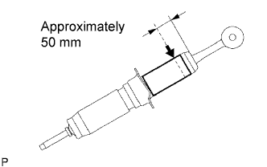

FRONT SHOCK ABSORBER > DISPOSAL |
| 1. DISPOSE OF FRONT SHOCK ABSORBER ASSEMBLY LH |
|  |
Fully extend the shock absorber piston rod and fix the shock absorber in place at an angle in a vise or similar tool.
Using a drill or similar tool, slowly make a hole approximately 50 mm (1.97 in.) from the top end of the shock absorber and discharge the gas inside of it.